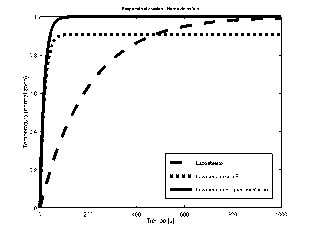
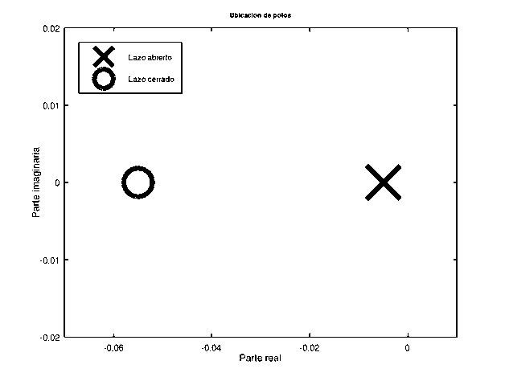
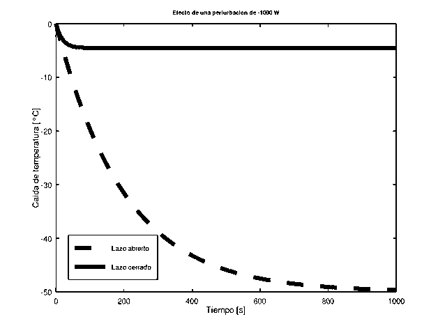

Cómo la Transformada de Laplace, el álgebra de bloques y el análisis de polos permiten controlar la temperatura con la que se sueldan las tarjetas electrónicas.
En la fabricación de tarjetas electrónicas, los componentes SMD (de montaje superficial) se colocan sobre una pasta de soldadura. Luego la tarjeta pasa por un horno de reflujo sobre una banda transportadora, donde se calienta hasta que la pasta se derrite y suelda los componentes.
La temperatura debe seguir un perfil muy preciso. Si se queda corta, la soldadura queda fría y falla. Si se pasa, se dañan los componentes o la tarjeta. Por eso el horno necesita un control en lazo cerrado.
El horno se modela con una analogía eléctrica-térmica. La capacitancia térmica C es la capacidad de guardar calor, como un capacitor. La resistencia térmica R es la oposición a que el calor escape al ambiente, como un resistor.
Calor que se guarda = calor que entra − calor que se pierde:
Se mide la temperatura por encima del ambiente: \( \theta(t) = T(t) - T_a \).
Con condiciones iniciales cero:
Es un sistema de primer orden con ganancia \(K = R\) y constante de tiempo \(\tau = RC\).
| Parámetro | Símbolo | Valor | Unidad |
|---|---|---|---|
| Resistencia térmica | R | 0.05 | °C/W |
| Capacitancia térmica | C | 4000 | J/°C |
| Constante de tiempo | τ = RC | 200 | s |
| Ganancia de la planta | K = R | 0.05 | °C/W |
| Ganancia proporcional | Kp | 200 | W/°C |
| Prealimentación | Kff = 1/K | 20 | W/°C |
El controlador combina dos acciones. La prealimentación (Kff) calcula de antemano la potencia necesaria. La acción proporcional (Kp) corrige el error que mide el sensor, en lazo cerrado negativo.
Mueve los controles y mira cómo cambia la temperatura del horno. La curva naranja es el lazo abierto y la azul es el lazo cerrado. Cerca del final de la simulación entra una perturbación, por ejemplo una tanda de tarjetas frías.
Este script calcula las funciones de transferencia, los polos y los valores finales, y genera las gráficas de comprobación.
% =========================================================
% Proyecto ELEC-5308 - Tema 4: Control termico en horno de reflujo SMD
% Estudiante: Daniel Miranda Martinez
% =========================================================
pkg load control
clc; clear; close all;
% ---------- Parametros del horno ----------
R = 0.05; % Resistencia termica [°C/W]
C = 4000; % Capacitancia termica [J/°C]
tau = R*C; % Constante de tiempo [s]
K = R; % Ganancia de la planta [°C/W]
% ---------- Controlador ----------
Kp = 200; % Ganancia proporcional [W/°C]
Kff = 1/K; % Prealimentacion [W/°C]
% ---------- Funciones de transferencia ----------
s = tf('s');
G = K/(tau*s + 1); % Planta: horno
T_LA = Kff*G; % Lazo abierto (solo prealimentacion)
T_P = feedback(Kp*G, 1); % Lazo cerrado solo proporcional
T_LC = (Kp + Kff)*feedback(G, Kp); % Lazo cerrado + prealimentacion
% ---------- Resultados en pantalla ----------
disp('===== PLANTA G(s) ====='); G
disp('===== LAZO ABIERTO ====='); T_LA
disp('===== LAZO CERRADO (P + prealimentacion) ====='); T_LC
p_LA = pole(T_LA); p_P = pole(T_P); p_LC = pole(T_LC);
printf('\nPolo lazo abierto: %.4f\n', p_LA);
printf('Polo lazo cerrado: %.4f\n', p_LC);
printf('Ceros lazo cerrado: %s\n', mat2str(zero(T_LC)));
printf('\nValor final lazo abierto: %.4f\n', dcgain(T_LA));
printf('Valor final solo P: %.4f\n', dcgain(T_P));
printf('Valor final P + prealim.: %.4f\n', dcgain(T_LC));
printf('\nTiempo de estab. lazo abierto (4*tau): %.1f s\n', 4/abs(p_LA));
printf('Tiempo de estab. lazo cerrado: %.1f s\n', 4/abs(p_LC));
% ---------- Figura 1: Respuesta al escalon ----------
t = 0:1:1000;
y_LA = step(T_LA, t);
y_P = step(T_P, t);
y_LC = step(T_LC, t);
figure(1);
plot(t, y_LA, 'k--', 'LineWidth', 2); hold on;
plot(t, y_P, 'k:', 'LineWidth', 2);
plot(t, y_LC, 'k-', 'LineWidth', 2);
grid on;
xlabel('Tiempo [s]'); ylabel('Temperatura (normalizada)');
title('Respuesta al escalon - Horno de reflujo');
legend('Lazo abierto', 'Lazo cerrado solo P', 'Lazo cerrado P + prealimentacion', ...
'Location', 'southeast');
% ---------- Figura 2: Mapa de polos ----------
figure(2);
plot(real(p_LA), imag(p_LA), 'kx', 'MarkerSize', 14, 'LineWidth', 2); hold on;
plot(real(p_LC), imag(p_LC), 'ko', 'MarkerSize', 12, 'LineWidth', 2);
grid on; xlim([-0.07 0.01]); ylim([-0.02 0.02]);
xlabel('Parte real'); ylabel('Parte imaginaria');
title('Ubicacion de polos');
legend('Lazo abierto', 'Lazo cerrado', 'Location', 'northwest');
% ---------- Figura 3: Perturbacion (se abre la puerta / entra una tarjeta fria) ----------
Pd = -1000; % Perdida de calor de 1000 W
yd_LA = Pd*step(G, t);
yd_LC = Pd*step(feedback(G, Kp), t);
figure(3);
plot(t, yd_LA, 'k--', 'LineWidth', 2); hold on;
plot(t, yd_LC, 'k-', 'LineWidth', 2);
grid on;
xlabel('Tiempo [s]'); ylabel('Caida de temperatura [°C]');
title('Efecto de una perturbacion de -1000 W');
legend('Lazo abierto', 'Lazo cerrado', 'Location', 'southwest');
Polo lazo abierto: -0.0050 Polo lazo cerrado: -0.0550 Ceros lazo cerrado: [] Valor final lazo abierto: 1.0000 Valor final solo P: 0.9091 Valor final P + prealim.: 1.0000 Tiempo de estab. lazo abierto: 800.0 s Tiempo de estab. lazo cerrado: 72.7 s



| Sistema | Polo | Ceros | ¿Estable? |
|---|---|---|---|
| Lazo abierto | s = −1/200 = −0.005 | Ninguno | Sí |
| Lazo cerrado | s = −11/200 = −0.055 | Ninguno | Sí |
Los dos polos son reales y negativos, así que el sistema es estable y no oscila. El control en lazo cerrado mueve el polo 11 veces más a la izquierda, y por eso responde 11 veces más rápido.
| Constante de tiempo | Tiempo de estabilización (4τ) | |
|---|---|---|
| Lazo abierto | 200 s | 800 s ≈ 13.3 min |
| Lazo cerrado | 18.2 s | 72.7 s ≈ 1.2 min |
Para una entrada escalón unitario \(R(s)=1/s\):
| Caso | Valor final | Error |
|---|---|---|
| Lazo abierto: \(\frac{1}{200s+1}\) | 1 | 0 %* |
| Solo P: \(\frac{10}{200s+11}\) | 10/11 = 0.909 | 9.1 % |
| P + prealim.: \(\frac{11}{200s+11}\) | 1 | 0 % |
*Solo si el modelo es perfecto. Si R cambia, el lazo abierto pierde exactitud.
Perturbación de −1000 W: en lazo abierto la temperatura baja 0.05·1000 = 50 °C. En lazo cerrado baja solo 50/11 ≈ 4.5 °C.